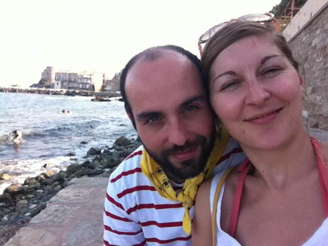

le vendredi 13 septembre 2013 à Saint-Chamas
Nous ne recevrons pas vos réponses par télégramme, et si vous souhaitez nous faire part de votre venue, vous pouvez le faire en ligne ici.
Confirmez votre présence
devant
15h, mairie deSaint-Chamas,
Voir la carte »
16h, église St-Léger de Saint-Chamas,
au domaine de Sulauze à Miramas.
One fine body…